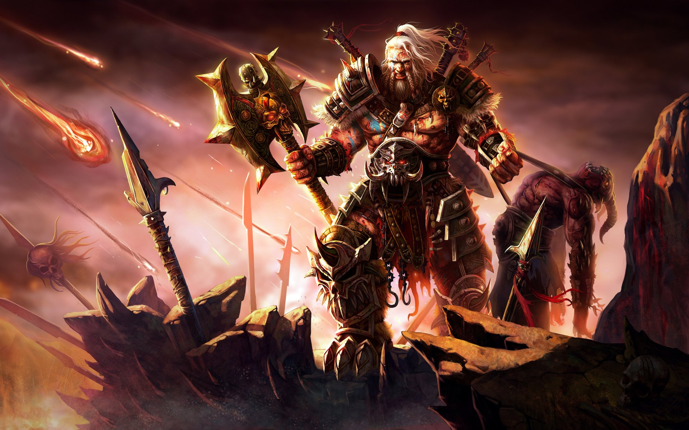

Esse blog tem o intuito de ajudar os jogadaores
de diablo 3, a fazerem suas builds de temporada
~~ Bárbaro ~~

Por que escolher o Bárbaro?
Escolha o Bárbaro se quiser experimentar a brutalidade do combate corpo a corpo em sua
glória cheia de sangue. O Bárbaro trata de atacar, cortar e esmagar demônios em uma polpa
enfurecido com um frenesi enlouquecedor, mas permanecendo forte e implacável através de
poderosos gritos de guerra. Você acumulará suas energias agitando-se em combate, saltando
e gritando, e canalizando a Fúria acumulada em ataques massivos e radicais. O Bárbaro é
a epítome de um lutador implacável em Diablo 3. Builds de Bárbaro
~~ Crusader ~~
Por que escolher o Crusader?
Escolha o Cruzado se você se imaginar vestindo a mais pesada das armaduras,
destruindo seus inimigos com partes iguais de poder sagrado e destreza marcial bruta.
Descendo para a batalha em um corcel fantasmagórico, consagrando os campos de combate
e enfraquecendo o inimigo com julgamentos resolutos, o Cruzado prossegue para aniquilar as
hordas demoníacas com energia celestial e saraivadas de bombardeio. Fortalecendo todo o seu
grupo com poderosas leis de proteção, você é o melhor estrategista em Diablo 3. Builds de Crusader
~~ Caçador de Demonios ~~
Por que escolher o Caçador de Demonios?
Escolha o Demon Hunter em Diablo 3 se você gosta de destruir seu inimigo de longe, alternando
flechas perfurantes com massivas barragens explosivas. Maravilhas mecânicas e sobrenaturais ficam
ao seu lado, enquanto os próprios poderes das sombras envolvem e protegem você. Dominando seu
ódio por demônios apenas por meio da disciplina, você é o melhor atirador do jogo. Builds de Caçador de Demonios
~~ Monge ~~
Por que escolher o Monge?
Escolha o Monge se quiser ganhar domínio sobre o combate corpo a corpo destro e corpo a corpo, e canalizar os poderes
acumulados de seus golpes corpo a corpo em golpes esmagadores de energia sagrada. O Monge é o mestre do combate,
correndo pelo campo de batalha e exercendo o máximo controle por meio de puxões, empurrões e mantras. Seus golpes
incapacitantes dominam os adversários como as ondas arrebatadoras, ao acabar com eles com rajadas de poder
espiritual. O Monge incorpora a dualidade de evasão natural e destruição sagrada em Diablo 3.
Por que escolher o Necromante?
Escolha o Necromante se você gosta da prática das artes das trevas - esmagando ossos com sua vontade cruel e afiando-os
contra seus inimigos, derramando sangue em dosagem calculada para fortalecer seus feitiços, e ao mesmo tempo levantando
hordas massivas de mortos de suas próprias sepulturas . Com maldições debilitantes e várias maneiras de controlar o
campo de batalha, você é a personificação do comandante em Diablo 3.
Por que escolher o Feiticeiro?
Escolha o Witch Doctor se você gosta de enganar o inimigo, deixando-o indefeso e destruído por feitiços e transmutações.
Uma vez no controle, você pode mergulhar para matar com uma maldição devastadora ou se deleitar com a carnificina que
seus animais de estimação irão causar. Figuras deformadas e mortos-vivos se dobram à sua vontade, assim como a própria
realidade - distorcida, borrada e ensanguentada.
~~ Arcanista ~~
Por que escolher o Arcanista?
Escolha o Wizard se quiser dobrar os elementos à sua vontade, empunhando o poder do fogo, gelo, relâmpago e puro poder
arcano com o propósito singular de aniquilar seus inimigos. Enquanto transforma o Arcane Power em tempestades,
reviravoltas e explosões, o Wizard permanece seguro por trás de poderosos escudos de gelo e energia - seja lutando
de longe ou em combate corpo a corpo feroz. Com uma forma de Arconte ascendente que domina qualquer oposição restante,
o Mago é a personificação dos poderes elementais em Diablo 3.